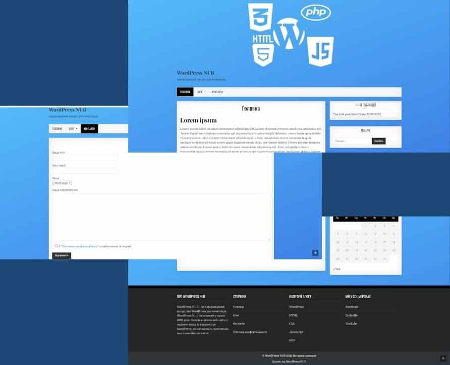

Blog website "WordPress NUB"

Website development on CMS WordPress. Pages: main, blog, contacts.
Link to website: wordpressnub.com
Website development on CMS WordPress. Pages: main, blog, contacts.
Link to website: wordpressnub.com